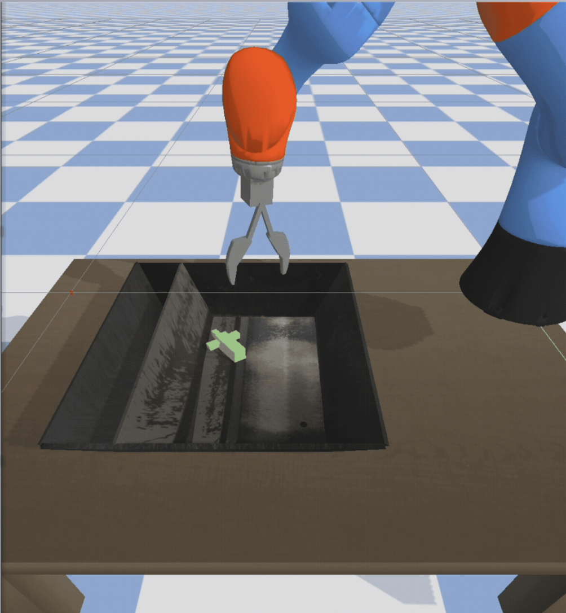
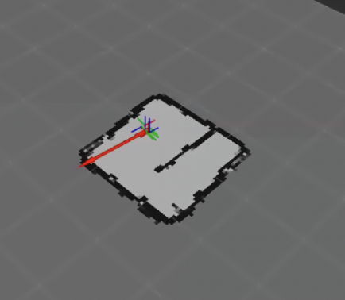
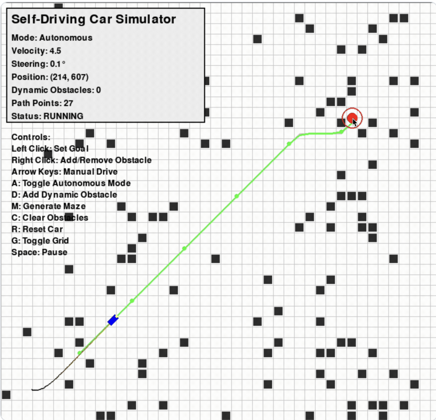
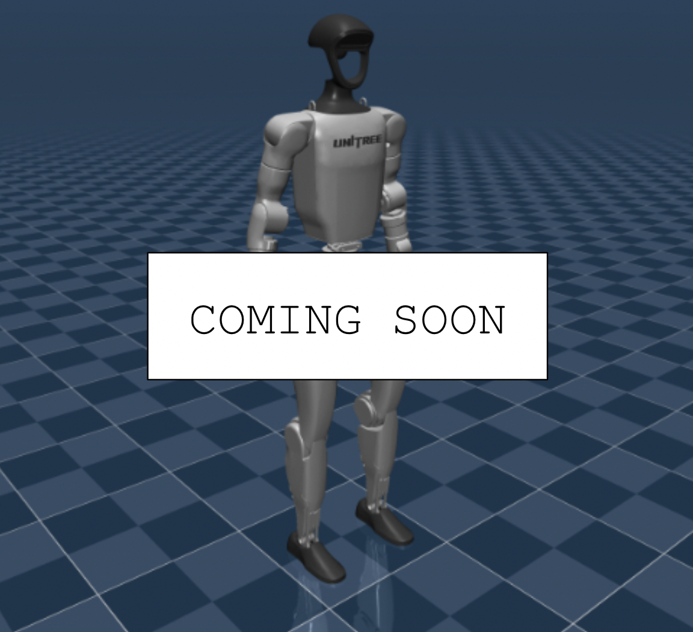

Nithin K Reddy
Last updated: September 2026
About Me
Hey! I'm Nithin, a graduate student at the University of
Michigan, where I am pursuing an MS in Robotics. I'm interested in building and shipping
software to things that have the potential to change the world for the better, whether that be autonomous
vehicles, rockets, humanoids, or something else!
Prior to my MS, I was also an undergraduate student at the University of Michigan, where I graduated
Summa Cum Laude with my BSE in Robotics. During my time as an undergraduate, I gained experience in
a variety of technical domains, including machine learning, perception, SLAM, and control.
Projects
Temporal Ensemble Inference for SmolVLA | Website
Fine-tuned SmolVLA on 150 real-robot demonstrations across three manipulation tasks and adapted temporal ensembling
to its flow-matching inference pipeline, improving deformable-object manipulation success by 40 percentage points.
PPO for Robotic Grasping | GitHub

Implemented and trained a PPO policy in PyTorch for 7-DOF robotic grasping in PyBullet, including the clipped
surrogate objective, Generalized Advantage Estimation (GAE), experience collection, and model checkpointing.
6-DOF Reusable Launch Vehicle GNC | GitHub

Developed a nonlinear 6-DOF powered-descent GNC stack integrating rigid-body dynamics, Kalman-filter state estimation, trajectory guidance,
and quaternion attitude control, achieving a 78% autonomous landing success rate across 150 randomized Monte Carlo trials.
LIDAR-Based Simultaneous Localization and Mapping (SLAM)

Implemented particle-filter SLAM in C++ and ROS2 using probabilistic motion and LiDAR sensor models, low-variance
resampling, ray tracing, and log-odds occupancy mapping for simultaneous localization and environment reconstruction.
2D Path Planning Using A* | GitHub

Built an interactive autonomous-driving simulator combining A* path planning, obstacle-aware path smoothing, vehicle dynamics,
and path tracking to navigate user-defined environments and obstacles.
[IN PROGRESS] Reinforcement Learning for Humanoid Backflipping

Developing a reinforcement-learning policy for the Unitree G1 in MuJoCo, with a focus on reward shaping for jumping,
backflipping, stable landing, and recovery.
Socials
Always looking to chat!
University Email: nkreddy [at] umich [dot] edu
Personal Email: nitkred [at] gmail [dot] com
LinkedIn: linkedin.com/in/nitkred
X: @nitkred